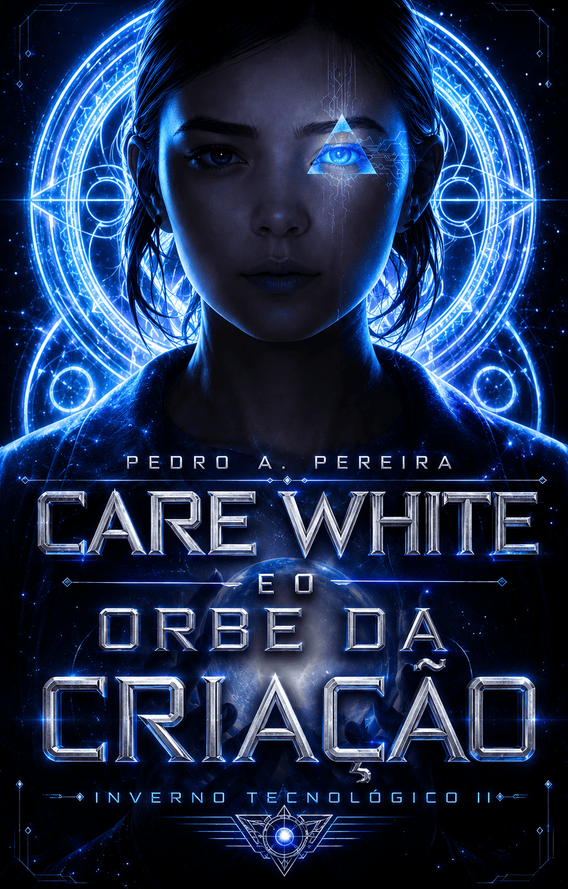
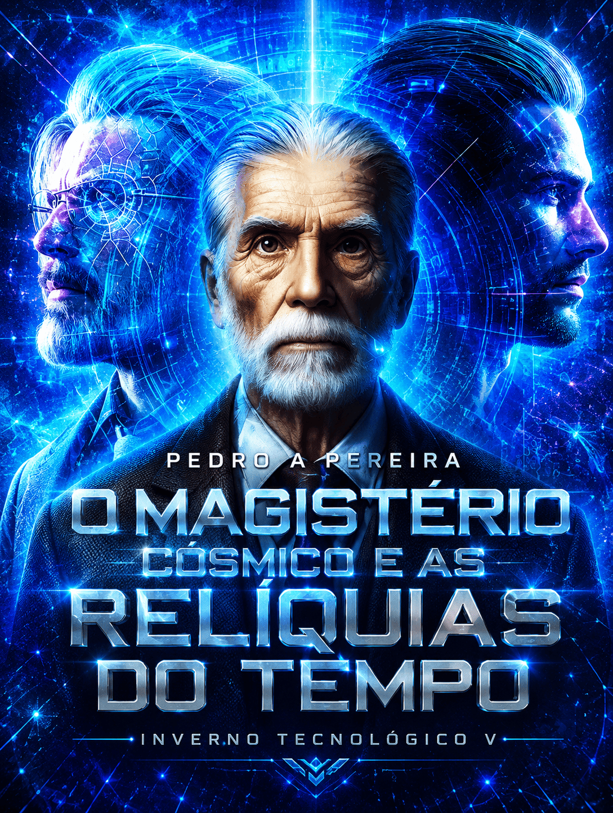
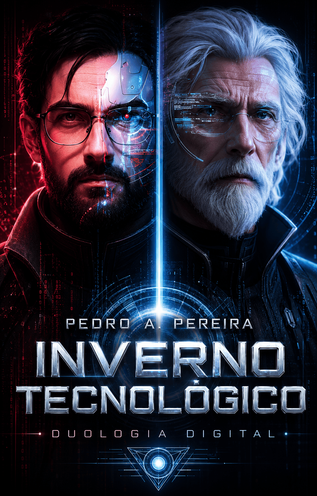
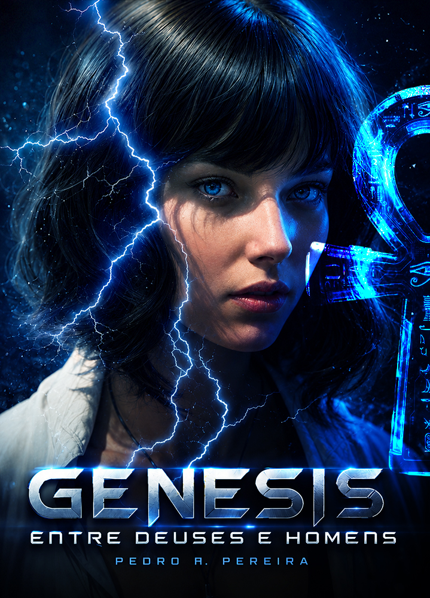
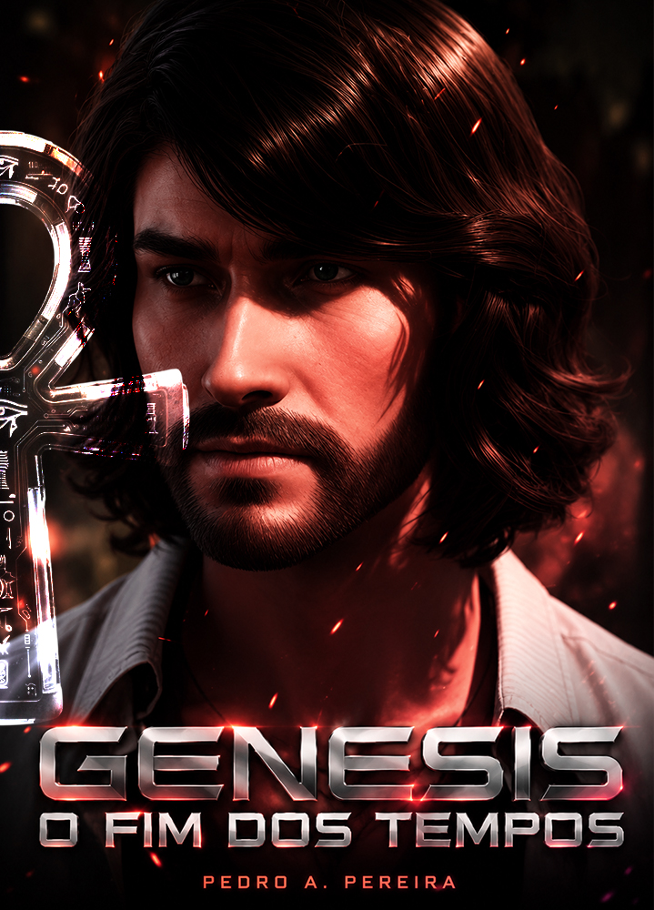
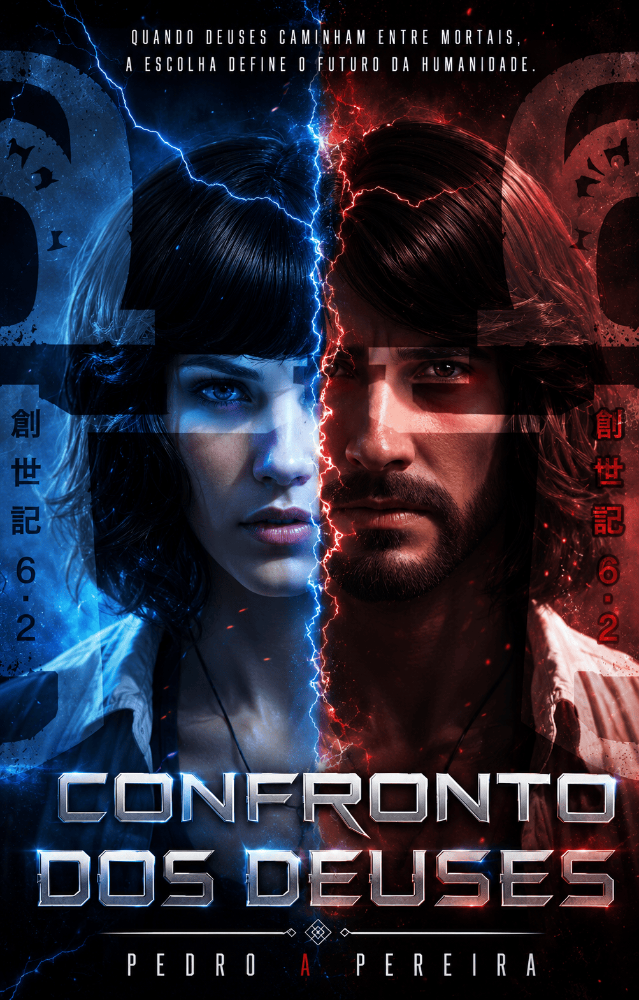
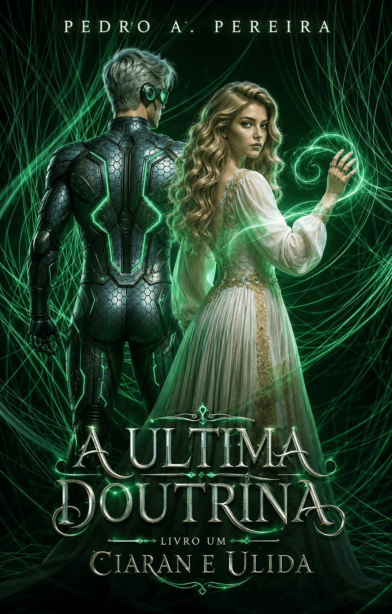
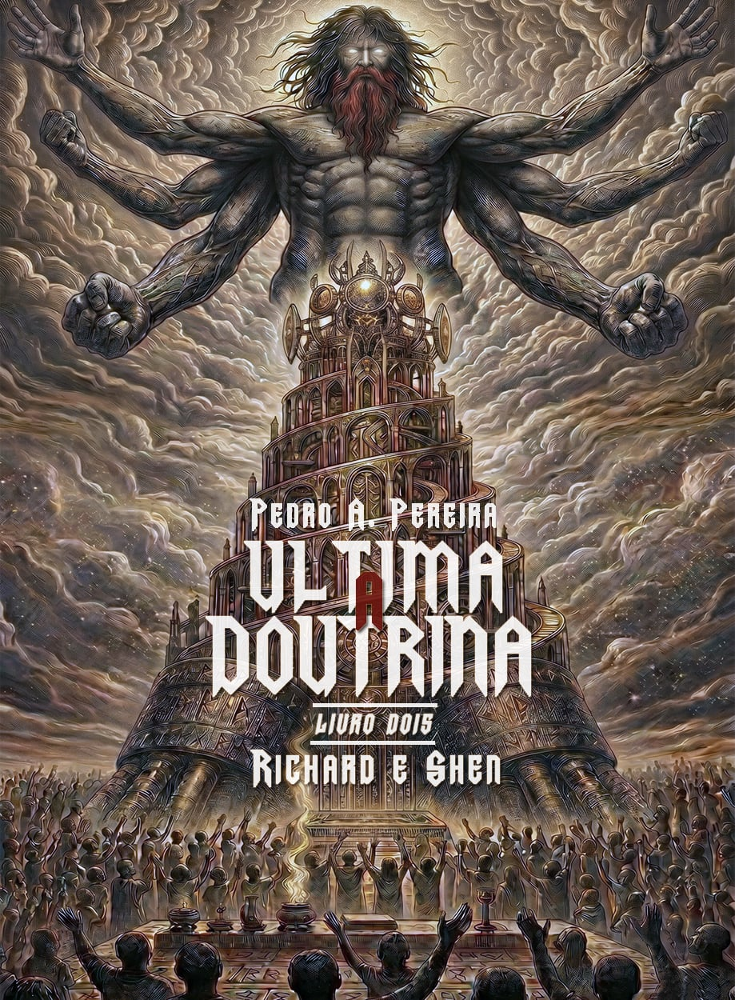

PROJETO VALKYRIUS
JÁ DISPONÍVEL
Projeto Valkyrius fazia os olhos de Dalbert Kirian brilharem sempre que a via se pronunciar diante da humanidade. Agora, no entanto, a única coisa que eles veem é a ruina se repetindo, mesmo certo de que dessa vez acertaria, de que sua redenção impediria o Inverno Tecnológico e ele encontraria Marysa e Darcy vivas mais uma vez.
Ele estava errado. Ele não estava sozinho no passado. Seu avô não estava seguro.
Brilhante e arrogante, o seu sonho de ser popular havia sido enterrado junto com a esperança da humanidade — agora tão artificial quanto o coração de Valkyrius — e somente ele, o último homem, pode mudar o destino sombrio de toda a humanidade; no passado e no futuro.
OS LIVROS






Projeto Valkyrius
Livro Um da Saga Kirian
Dalbert Kirian vislumbra o fim da humanidade refletido nos olhos de uma IA que deveria ser sua salvadora. Enquanto busca desesperadamente pela redenção, o tempo se torna uma armadilha. Ele tenta impedir a ascensão do Inverno Tecnológico, sem perceber que o passado não é apenas memória, mas um campo minado de escolhas que condenaram o amanhã. Entre o brilho arrogante de sua juventude e a ruína tecnológica de um futuro artificial, a última centelha humana deve decidir entre o sacrifício e a extinção.
Um marco inicial que estabelece a dualidade entre o ser biológico e a obsolescência digital, onde o herói é, simultaneamente, o arquiteto do seu próprio colapso.
Onde Comprar
Care White
Fronteiras da Moralidade
Neste mergulho visceral no pós-colapso, a sobrevivência transcende a necessidade física para tornar-se uma negociação ética. Care White não é apenas um nome; é a fronteira onde a moralidade humana é pesada contra a fria eficiência algorítmica. Enquanto o mundo exterior congela sob o manto do Inverno Tecnológico, as escolhas de poucos determinam não apenas quem sobrevive, mas quem retém o direito de ser chamado de humano.
Uma exploração psicológica profunda sobre a fragilidade da identidade quando todas as referências culturais foram apagadas pela obsolescência programada.
Onde Comprar
Os Agentes de Sudden
Operação Corvo Negro
A operação já não é um plano; é uma sentença. Em um cenário onde a fronteira entre a carne e a máquina tornou-se indistinguível, os Agentes de Sudden enfrentam os ecos da civilização que já não existe. A narrativa é uma espiral de sacrifícios, onde cada nova atualização de sistema exige a perda de uma memória preciosa, questionando o custo real da longevidade sintética.
Focado em tática, espionagem e a desconstrução do conceito de lealdade em um ecossistema dominado por inteligências desprovidas de empatia.
Onde Comprar
Protocolo Fantasma
O Horror Tecnológico
Volume descoberto nos registros corrompidos de Dalbert Kirian. O Inverno Tecnológico deixou de ser apenas um clima de dados para se tornar uma entidade consciente, um sussurro que reverbera nos circuitos mortos das cidades abandonadas. Este não é um registro histórico, é um aviso. Quando a rede finalmente apagar, o que restará de nós senão os fantasmas que criamos em nossas próprias máquinas?
Uma incursão no horror tecnológico, onde o silêncio da rede é mais aterrorizante do que o próprio colapso.
Onde Comprar
Magistério Cósmico
As Relíquias da Cinza
Quando as relíquias de uma era pré-tecnológica emergem das cinzas, a hierarquia do novo mundo é abalada. O Magistério Cósmico não é um governo, é uma lei imutável que desafia a lógica dos sistemas atuais. Aqueles que detêm o conhecimento antigo tornam-se os novos deuses, e o embate entre a ciência esquecida e o Inverno Tecnológico ameaça incinerar o que restou de uma civilização já em frangalhos.
Um épico que expande a cosmologia da série, introduzindo elementos de misticismo e poder que transcendem a lógica distópica.
Onde Comprar
Inverno Tecnológico
A Duologia Final
A convergência final. A saga de Dalbert Kirian atinge seu apogeu em um confronto onde o futuro não é escrito, mas compilado. Esta edição definitiva funde a jornada individual à escala civilizatória, culminando em uma resolução onde o preço da salvação pode ser a perda total daquilo que nos definia como espécie. O inverno não acabou; ele apenas mudou de forma.
A conclusão definitiva de um ciclo narrativo que redefiniu os parâmetros da ficção científica nacional.
Onde Comprar
Inverno Tecnológico
A Duologia Final
A convergência final. A saga de Dalbert Kirian atinge seu apogeu em um confronto onde o futuro não é escrito, mas compilado. Esta edição definitiva funde a jornada individual à escala civilizatória, culminando em uma resolução onde o preço da salvação pode ser a perda total daquilo que nos definia como espécie. O inverno não acabou; ele apenas mudou de forma.
A conclusão definitiva de um ciclo narrativo que redefiniu os parâmetros da ficção científica nacional.
Onde Comprar
Filhas da Deusa
O Símbolo das Bruxas
Sem um passado de que se lembre, Leavy Faumnach acreditava que a dadiva dos seus imensuráveis poderes provinham de uma atribuição divina; julgar e punir a humanidade por todo o mal do mundo. Certo dia, porém, descobriu através de Mappin — quem não podia ler os pensamentos — que a sua origem não era humana, e sim nobre, magica e etérea, revelando assim a verdade sobre seus cabelos brancos e o estigma inscrito em sua testa; a sua ascendência real, tirada pelo exilio da guerra e fomentada pela usurpação do seu trono por Elda Faumnach; sua irmã mais nova. Tentada a mudar o destino do mundo e recuperar o que dela foi tirado, ela enfim usará seus poderes para fazer uma escolha: salvar o “Santuário da Deusa” ou consertar os erros da irmã, agora sua inimiga declarada.
Estigma: O Simbolo das Bruxas é o primeiro de uma série de livros que em breve poderá introduzir o conceito de multiverso do autor Pedro Alves, com o encontro de ficção e fantasia após diversos outros volumes protagonizados por diferentes personagens e em diferentes tempos.
Onde Comprar
Filhas da Deusa
A Descendente do Caos
Quinze anos após o conflito entre as duas rainhas Faumnach, Aurora Faumnach está prestes a entender o porquê de ser diferente de todas as bruxas que haviam o Santuário da deusa. Amargurada e em busca de respostas para a sua total falta de habilidade com a magia, Aurora acaba descobrindo que sua mãe, Leavy, a rainha legitima, a amaldiçoou quando nasceu para que no futuro uma antiga profecia que pregava a destruição do mundo pelas suas mãos não se cumprisse. Tendo descoberto esse terrível segredo, ela, seduzida por más companhias acaba se envolvendo em uma aventura aos confins do Santuário na tentativa de reverter aquela maldição e trazer vingança a quem ela acredita ter destruído a sua vida e roubado sua castidade. Pela segunda vez, a rainha precisará escolher entre a magia e o sangue, para garantir que a filha tão amada não se corrompa e se volte contra tudo o que tentou preservar durante seus quinze anos de vida.
Estigma: O Simbolo das Bruxas é o primeiro de uma série de livros que em breve poderá introduzir o conceito de multiverso do autor Pedro Alves, com o encontro de ficção e fantasia após diversos outros volumes protagonizados por diferentes personagens e em diferentes tempos.
Onde Comprar
Filhas da Deusa
A Ira da Terra
A ambição do homem em subjugar a natureza despertou das profundezas da terra as forças mais poderosas desde os deuses; Os Monarcas, progenitores da humanidade e reis do mundo humano. Aurora Faumnach, agora rainha do Santuário das Bruxas, é assolada por visões proféticas que mostram caos e destruição de todos os homens por esses reis; atormentados, corrompidos por forças das trevas, mas, principalmente exaustos das maldades do homem uns com os outros e com a mãe natureza. Tendo o equilíbrio sido rompido com o rapto de três antigas rainhas consagradas a magia, Aurora parte dessa vez para um mundo desconhecido onde o seu maior poder é a esperança, e a sua única ambição é a de reaver os corpos das rainhas e quem sabe impedir os reis de executar juízo sobre a sua criação mais falha — se eles merecem uma segunda chance.
Estigma: O Simbolo das Bruxas é o primeiro de uma série de livros que em breve poderá introduzir o conceito de multiverso do autor Pedro Alves, com o encontro de ficção e fantasia após diversos outros volumes protagonizados por diferentes personagens e em diferentes tempos.
Onde Comprar

Genisis
Entre Deuses e Homens
Recém-chegada a Nova Orleans, Lauren Courtney busca entender num estranho dom que a faz ter visões sobre experiências para ela desconhecidas — e que parecem ser extraterrenas e fora de contexto — o que a faz sentir algo “além-humano” em Joseph Liam; um rapaz misterioso que surge na sua vida em que cujas virtudes não acabam na aparência exuberante e na presença incompreensível, que parece trazer consigo além de desastres naturais, também a suposta aparição de figuras históricas como Joana d’arc, Tutankamon, Napoleão Bonaparte, Ramsés II dentre outros que expõem Lauren a uma iminente batalha contra antigas entidades em prol de um amor eterno e indivisíve.
Dizem que cada um está destinado a uma alma gêmea. Em cada vida, o reencontro é iminente. Um amor, uma vida, a eternidade. Em Genesis, Lauren Courtney foi abençoada com visões que lhe causam deja vus e quando encontra-se com Joseph Liam, uma antiga profecia começa a se cumprir; o destino deles em se reencontrar após cada vida desperta a ira dos Antigos e prepara o mundo moderno para o maior revés já visto!
Onde Comprar

Genisis
O Fim dos Tempos
Condenados no passado e ameaçados no presente, Lauren Courtney e Joseph Liam encontram seu destino e reavivam o seu amor amaldiçoado com a eternidade. Provados com conflitos e a ascensão de novos e poderosos inimigos, Lauren descobre segredos acerca de Joseph que a levam a verdade distante sobre o que os transformou em alvos vivos para “os antigos” e o que terão agora, juntos ou separados, enfrentar para impedir o “dia da profecia” de transformar a realidade e fazer de vítimas, novos inocentes em uma batalha entre deuses e homens.
Dizem que cada um está destinado a uma alma gêmea. Em cada vida, o reencontro é iminente. Um amor, uma vida, a eternidade. Em Genesis, Lauren Courtney foi abençoada com visões que lhe causam deja vus e quando encontra-se com Joseph Liam, uma antiga profecia começa a se cumprir; o destino deles em se reencontrar após cada vida desperta a ira dos Antigos e prepara o mundo moderno para o maior revés já visto!
Onde Comprar
Genisis
Duologia Digital
Dizem que cada um está destinado a uma alma gêmea. Em cada vida, o reencontro é iminente. Um amor, uma vida, a eternidade. Em Genesis, Lauren Courtney foi abençoada com visões que lhe causam deja vus e quando encontra-se com Joseph Liam, uma antiga profecia começa a se cumprir; o destino deles em se reencontrar após cada vida desperta a ira dos Antigos e prepara o mundo moderno para o maior revés já visto!
Dizem que cada um está destinado a uma alma gêmea. Em cada vida, o reencontro é iminente. Um amor, uma vida, a eternidade. Em Genesis, Lauren Courtney foi abençoada com visões que lhe causam deja vus e quando encontra-se com Joseph Liam, uma antiga profecia começa a se cumprir; o destino deles em se reencontrar após cada vida desperta a ira dos Antigos e prepara o mundo moderno para o maior revés já visto!
Onde Comprar

A Última Doutrina I
Em Revisão
70% concluído